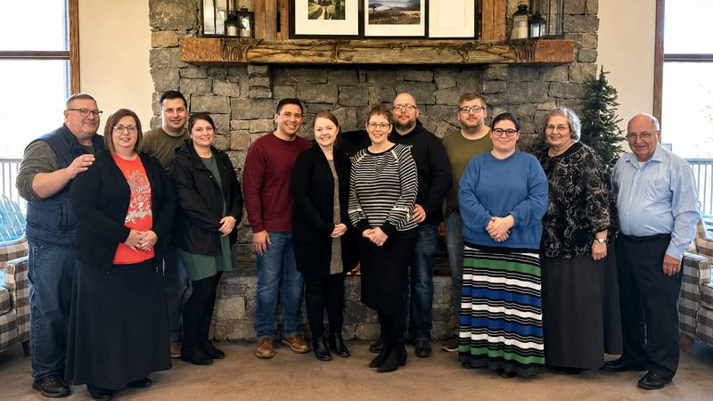
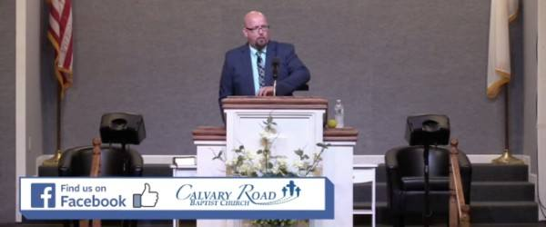
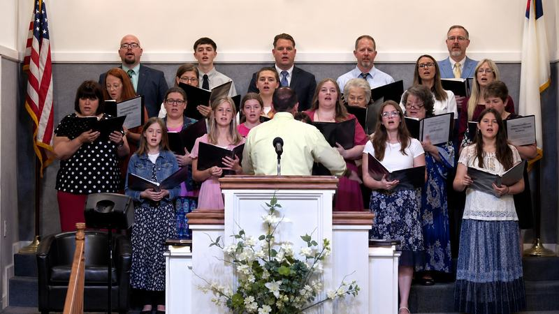
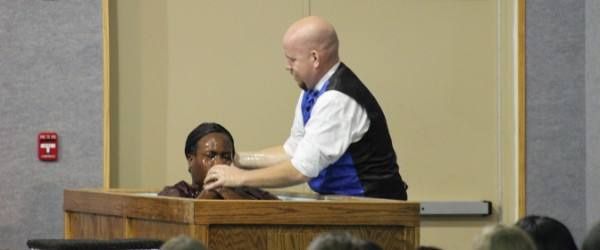
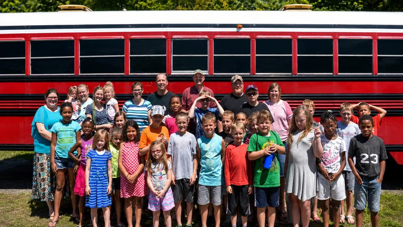

Independent Baptist Church · New Albany, Indiana
A Church That's Alive Is Well Worth the Drive
Welcome to Calvary Road Baptist Church. We would love to have you and your family join us this Sunday as our guests.
You Are Welcome Here
Calvary Road Baptist Church is a conservative, King James Bible preaching church in New Albany, Indiana. Many of our members drive in from Clark, Floyd, and Harrison Counties, and from Louisville, Kentucky, every week to be part of our services.
By preaching and teaching the Word of God, sharing the love of Jesus, and depending on the Holy Spirit, we seek to glorify God, evangelize the lost, and disciple believers. We would like to extend a personal invitation to you and your family to be our special guests.
Our Story & Leadership
"Go ye therefore, and teach all nations... teaching them to observe all things whatsoever I have commanded you."
Matthew 28:19-20 · The Great Commission
When We Gather
Weekly Services
Sunday School · 10:00 AM
Classes for all ages.
Morning Worship · 11:00 AM
Junior church and nursery available.
Evening Worship · 5:00 PM
Family integrated service, with nursery available.
Prayer, Bible Study & King's Kids
Midweek study for adults and a program for the children.
Visitation & Evangelism
Reaching our community with the gospel.
Ministries
Bus & Van Routes
Two bus routes and a van route bring families and children to church each week. Need a ride? We will pick you up.
King's Kids
A fun, Bible centered Wednesday evening program for children.
Faith Promise Missions
Supporting the spread of the gospel at home and around the world.
Junior Church & Nursery
Care and age appropriate teaching for little ones during services.
Life at Calvary Road




Meet Our Pastor
Pastor Mike Kleitz has served as Senior Pastor since 2007.
Pastor Kleitz grew up at Calvary Road Baptist Church, attending since he was nine years old. He and his wife, Dawn, have six children. His heart is to see people come to know Christ and grow in their walk with Him.
Read More About Our LeadershipPlan Your Visit
What to Expect
Come as you are and expect a warm welcome. You will hear congregational singing, prayer, and clear preaching from the King James Bible. Most people dress casual to Sunday best, and you will be welcome either way.
Your children are safe and cared for. Junior church and a nursery are available during services, and there is a place for everyone in the family.
If you need a ride, our bus and van routes may serve your area. Just call and we will help arrange transportation.
Directions & Full DetailsFind Us
- 📍3795 Saint Joseph Rd.
New Albany, IN 47150 - ☎(812) 945-1943 church office
- ✉mkleitz@calvaryroadbaptist.net